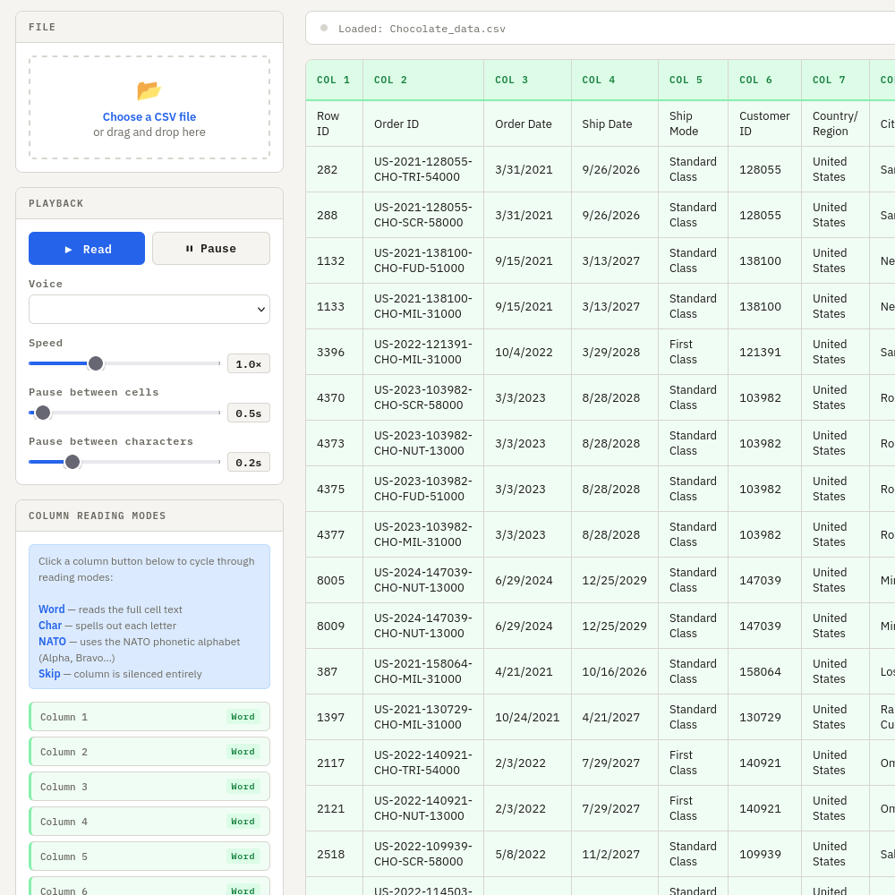
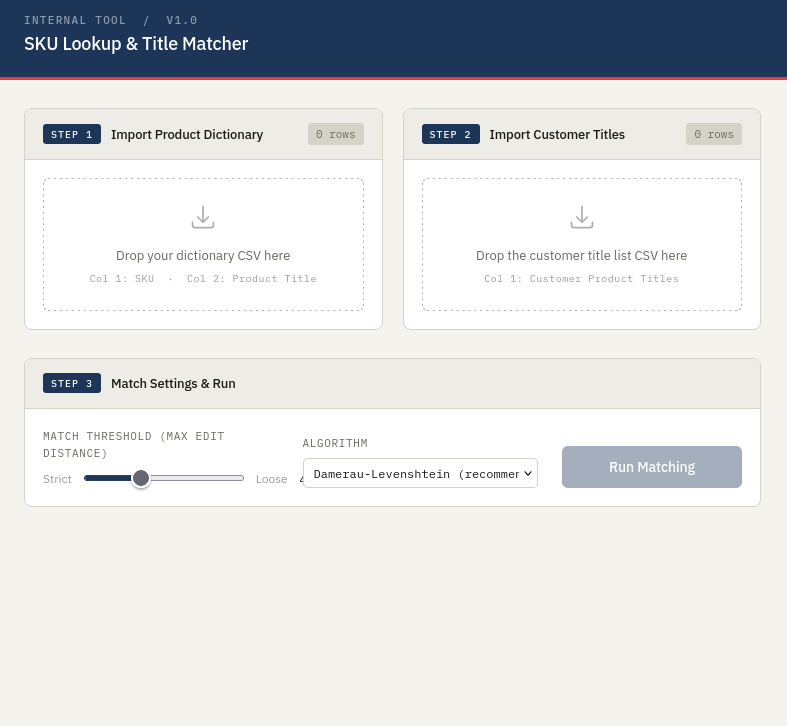
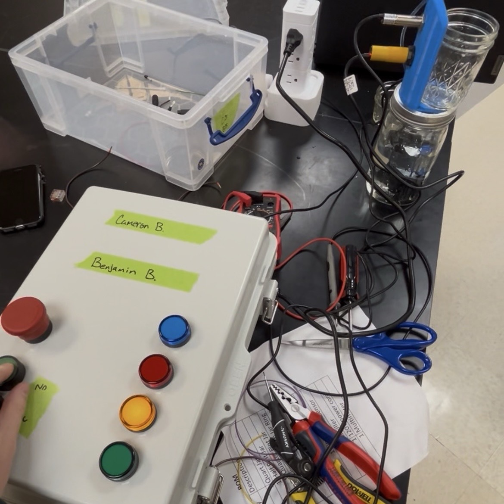

Welcome!
Hey, I'm Ben, a Computer Science master's student at Virginia Tech. I am a passionate programmer and engineer who loves to work with software as well as physical systems. I'm a technical problem solver who thrives on multifaceted high-impact projects. I love taking ideas from conceptual sketches all the way through to functional, high-performance solutions.
Please click the drop-downs below to see my projects & experience!
HazBot Autonomous Robot

I built this autonomous robot with a team of engineers at JMU during spring 2026.
It is powered by arduino, and is designed to complete an obstacle course based on a variety of sensor data. It has the capability to detect walls, changes in heat, VOCs, lights, and responds accordingly based on the input.
We achieved best-in-class accuracy on the course, with modular, well-designed code, carefully tuned sensors, and custom 3D printed wheels for added precision.
Accompanying the physical bot, we created a detailed CAD assembly based on the included and manufactured parts, as well as a series of drawings to outline the details of each component.
Frog & Bear Platformer Game (WebGL)

I built this web-based 3D video game with a partner at JMU during fall 2025.
It is written from scratch with WebGL and TypeScript, with an engine built from the ground-up. We made this as a part of Dr. Chris Johnson's CS488: Computer Graphics class, and learned a lot from his How to 3D textbook.
The game itself is compatible with all mainstream browsers, and features double controller support. It implements numerous computer graphics technologies, such as animations, textures, blinn-phong lighting, displacement maps, and much more.
Our video demo can be viewed here.
RimpleX Complex Number Calculator

I built this calculator with a project group in the spring of 2025.
This project was built in a simulated software engineering environment, where we recieved specifications from the product owner design a satisfactory product. We used ScrumBoard to track progress and delegate responsibilities. We learned a lot about estimating the amount of time it takes to implement good, modular, future-proof code.
The calculator is completely written in Java, and features a Swing GUI. It calculates complex numbers, with a history panel and complex plane graph. It also has a recording feature
The code can be viewed here.
Pomodoro Study Timer

I built this study timer with a friend during the summer of 2024.
We built it from the ground-up with HTML, CSS, and JavaScript. We used the SCRUM framework to delegate tasks, review progress, and handle sprints. We did this to reinforce fundamental software engineering principles that we had learned in college.
The timer features dynamic windows, user data stored in cookies, variable-length study & break time settings. It also features multiple backgrounds, alarms, and background rain noise settings. I personally use it whenever I choose to study with the Pomodoro technique.
The timer can be viewed here.
CSV Reader

I built this application during the spring of 2026, as a tool to help with data entry at a company I worked for.
The application can take a CSV file, exported from Excel or a similar tool, and read the values out loud with the browser's narration features. This helps save time when users must manually enter values into software that does not support file upload. It allows users to adjust the speed and pauses for optimal reading speed, and each column can be changed between being read as words, characters, or the NATO alphabet.
This application was primarily developed with AI tooling, to practice my skills with using AI to write code faster.
The app can be viewed here.
SKU Lookup & Title Matcher

I built this application during the spring of 2026, as a tool to help match customer orders with internal SKU values at a company I worked for.
The app takes a local list of product titles and corresponding SKUs (Stock Keeping Units), and a list of customer-entered product titles. It then matches the customer's list of titles with the internal, real names, and exports a list of the corresponding SKUs for internal company use. It does this with a selection of string similarity algorithms, that the user may choose.
This application was also primarily developed with AI tooling, to practice my skills with using AI to write code faster.
The app can be viewed here.
PLC Powered Water Fountain

I built this project during the fall of 2025 with a partner.
This PLC (Programmable Logic Control) controlled water fountain was created as a final, semester-long project for Production Systems Automation class at JMU.
The objective of the project was to learn PLC programming and wiring fundamentals, while creating a usable end product. The system features a water faucet head that can detect the size of a container and fill it up appropriately. It accomplishes this task with an optical sensor.
The system was programmed with CLICK PLC ladder logic software. With this, I learned numerous concepts that are common in real-world manufacturing and engineering.
M.Eng Computer Science: Software Development & Applications @ Virginia Tech
I am currently enrolled at VT, at the DC area campus. I have an expected graduation date of May 2027.
Through taking double-counting classes during my senior year at JMU, I am expected to complete the M.Eng program within one year of full-time coursework.